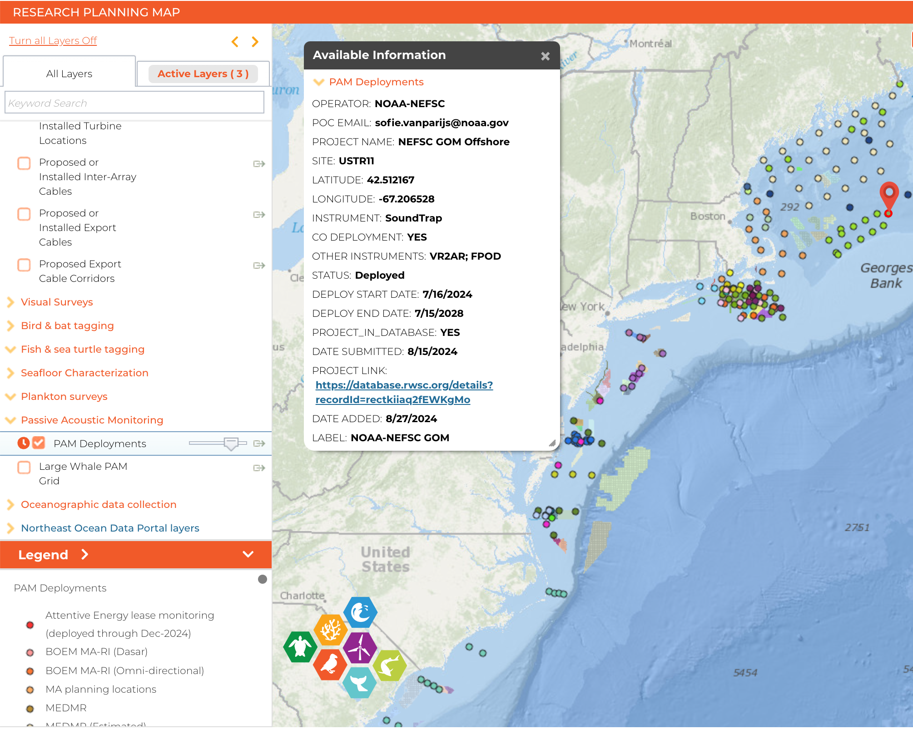

Introduction
This document was compiled by RWSC and Responsible Offshore Science Alliance (ROSA) staff at the request of the Protected Fish Species and Sea Turtle Subcommittees, and in collaboration with the Atlantic Cooperative Telemetry Network (ACT), the Smithsonian Environmental Research Center (SERC), and NOAA Fisheries.
This is a living document that will be updated by the Subcommittee as practices and technologies advance.
This document is also responsive to the needs and priorities articulated in the RWSC Science Plan, ROSA Offshore Wind Project Monitoring Framework and Guidelines, and several workshops and expert working group proceedings, including:
RWSC Acoustic Telemetry Workshop, February 15, 2024, virtual
ACT Network Meeting and Offshore Wind Workshop, June 3-6, 2024 in New Haven, CT
NOAA Fisheries Draft Federal Survey Mitigation Plans
Coastal Shark Bottom Longline Survey Mitigation Plan
Cooperative Atlantic States Shark Pupping and Nursery (COASTSPAN) Survey Mitigation Plan
Passive Acoustic Monitoring Survey Mitigation Plan (for acoustic telemetry receivers co-located with hydrophones)
ROSA Report and Recommendations on Fisheries Resource Data Production, Storage, and Accessibility
The purpose of this document is to address the data collection, management, and storage phases of an acoustic telemetry project to ensure that while numerous individual entities may be deploying, collecting, and analyzing telemetry data as part of an offshore wind project’s required fisheries or protected species monitoring plan or voluntary research, the infrastructure and information exists to facilitate future meta-analyses and syntheses of telemetry data across the U.S. Atlantic Outer Continental Shelf (OCS).
This document supports a peer-reviewed publication, in preparation, led by Beth Bowers, SERC/ACT. The draft manuscript, “Best practices for acoustic telemetry applications to offshore wind impact assessment” will provide recommendations for acoustic telemetry applied to the offshore wind community with respect to impact monitoring for offshore wind effects or contributions to the NOAA Fisheries Federal Survey Mitigation Strategy. The paper will describe data management and governance best practices, the scientific questions that can be answered using acoustic telemetry alone or in concert with other data and technologies, key considerations for study designs, challenges associated with acoustic telemetry such as gear loss and data retrieval, and common practices that are currently used in data cleansing and analyses.
The document is separated into three sections that correspond to a generic workflow for planning, deploying, and analyzing/interpreting acoustic telemetry data. Each section contains several detailed steps that were identified by ROSA and the RWSC Subcommittees.
1. Planning & Coordination Steps
Planning steps include pre-deployment coordination and communication best practices that help ensure that any new deployments are responsive to acoustic telemetry data gaps and needs in the region (to the extent practicable), and that individuals or entities responsible for deployments and data are connected to the existing network of experts and can benefit from lessons learned and other existing bodies of knowledge.
I. Engage with the RWSC Protected Fish Species or Sea Turtle Subcommittees and Responsible Offshore Science Alliance
Groups or individuals planning to deploy acoustic telemetry receivers and/or tag animals on the Atlantic OCS are encouraged to attend RWSC Subcommittee meetings to introduce their project, discuss their deployment plan with experts, and receive input on optimal location and other considerations (visit https://rwsc.org/events to view the Subcommittee meeting schedule).
II. Add acoustic telemetry instrument metadata to the RWSC Research Planning Map
In collaboration with ACT, ROSA and the Subcommittees are maintaining an understanding of acoustic telemetry receivers deployed on the Atlantic OCS and periodically updating maps that show current deployments on the RWSC Research Planning Map.
The maps are developed from location and deployment information shared by principal investigators and ACT. The following best practices ensure that information about new and completed deployments is shared so that the maps maintain their accuracy and relevance.
The Research Planning Map and regional ocean data portals (https://www.northeastoceandata.org, https://portal.midatlanticocean.org) also contain data products that may assist funders and researchers in selecting locations for receiver deployment. For example, the Research Planning Map and Portals contain data products representing monthly and annual vessel traffic for several classes of vessels; commercial fishing activity; offshore wind planning and leasing areas; and bathymetry and seafloor composition information. The Subcommittees encourages users to examine these data to inform acoustic telemetry receiver deployment site selection.
III. Codeployment of other sensors
Introducing new instruments and moorings into the environment presents an opportunity to co-locate other sensors and equipment. For example, several active and planned PAM deployments include support for acoustic telemetry receiver devices. This type of co-deployment builds the receiver network for studies of other taxa such as sea turtles and highly migratory fish species, and is strongly encouraged.
While the location of PAM instruments and moored PAM arrays may not represent ideal receiver locations needed to address research questions answered with acoustic telemetry for other taxa, RWSC and its partners encourage the deployment of multiple sensors per mooring, when practicable, while research questions and best practices for acoustic telemetry are under development.
In August 2022, the RWSC Sea Turtle Subcommittee recommended that acoustic telemetry receivers be included on each new PAM deployment as the RWSC Marine Mammal Subcommittee considers the design and implementation of a regional PAM network.
The locations of actively deployed PAM sensors on the Atlantic OCS can be viewed in the RWSC Research Planning Map. Clicking on each point will open a popup box that indicates whether an acoustic telemetry receiver is codeployed with the PAM hydrophone.

IV. Participate in Regional Telemetry Networks and set project to “public”
Participation involves submitting all completed data products and metadata forms (templates provided by ACT).
Visit the ACT Network’s Data Portal, MATOS (https://matos.asascience.com), for the mid-Atlantic and Northeast U.S. or FACT (https://secoora.org/fact) for the Southeast U.S. for more information including User Agreements.
2. Deployment & Data Collection
This document recognizes that deployment and data collection steps are likely specifically established by entities deploying instruments and collecting data; and in some case these procedures could be proprietary. The following steps outline minimum considerations for ensuring that data being collected by various entities around the region can eventually be collated and analyzed in the future to examine regional-scale questions or issues of interest.
VI. Calibration best practices and minimum specifications
[to be populated with content from Bowers, et al. in prep]
VII. Best practices for acoustic telemetry data QA/QC
[to be populated with content from Bowers, et al. in prep]
Regional acoustic telemetry networks provide data standardization and QA/QC services by acoustic telemetry data experts for all datasets in their network. This provides accuracy and consistency for researchers and analysts working with big datasets and saves time. This makes the data easier to use, and guarantees the data is stored somewhere other than a local drive, preventing accidental data loss. It also ensures that all data is standardized and analysis-ready. See the section on Participation in Regional Telemetry Networks.
3. Analysis & Visualization
This section provides an overview of steps to ensure consistent analysis of acoustic telemetry data that enable the development and visualization of regional scale telemetry data products.
[to be populated with content from Bowers, et al. in prep]
4. Archiving & Access
Raw data, metadata, and citations that are submitted to an Ocean Tracking Network OTN compatible regional networks (i.e., ACT or FACT) can also be transferred to global databases such as the Ocean Biodiversity Information System (OBIS) and/or NOAA’s National Centers for Environmental Information (NCEI) upon request.
[to be populated with content from Bowers, et al. in prep]